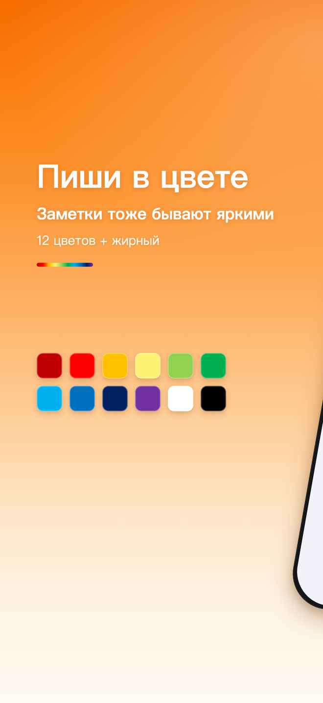
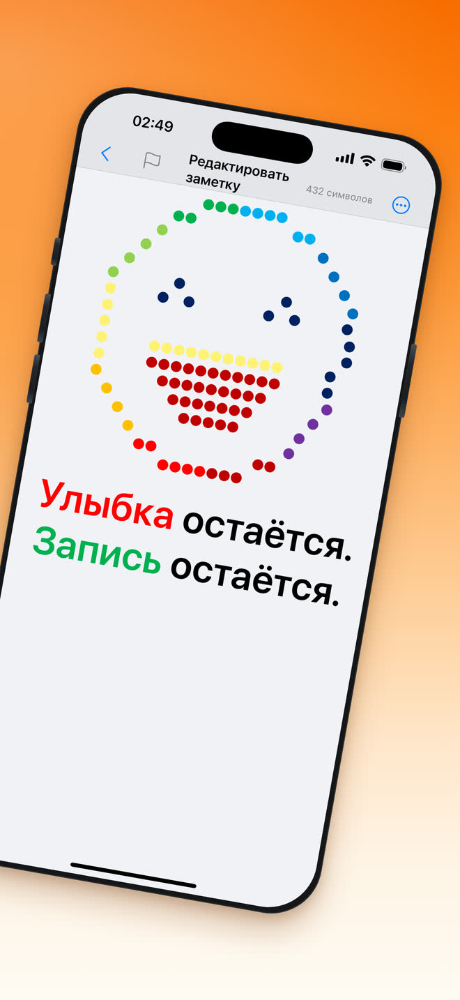
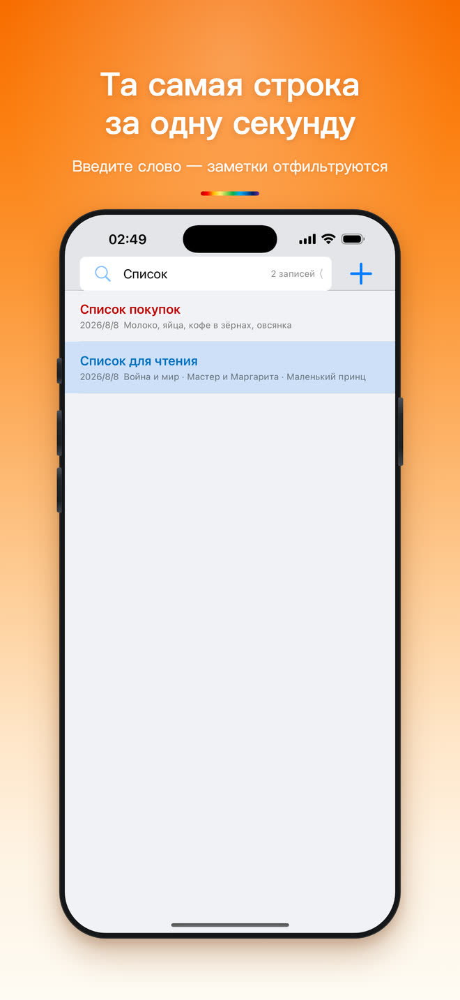
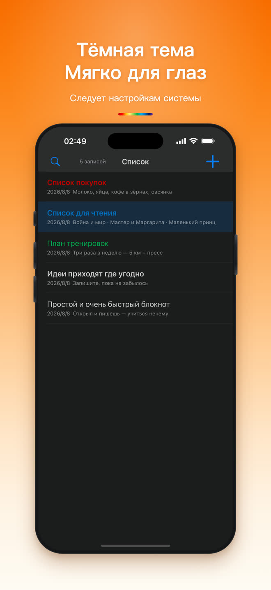

Открыл и пишешь
Ни регистрации, ни обучения, ни экрана настройки. Открываете приложение — курсор уже ждёт.
Бесплатно · iPhone · 30 языков
Чем проще, тем эффективнее. Минимал Заметки — полностью бесплатный блокнот, готовый к работе сразу после запуска, где угодно и когда угодно.
Поделиться
Цвет
Заметки не обязаны быть чёрно-белыми. Двенадцать стандартных цветов и жирное начертание лежат прямо на панели редактирования, а последний использованный цвет приложение запоминает.
12 цветов + жирный
Улыбка остаётся.
Запись остаётся.


Что умеет
Никаких панелей, обучающих туров и дерева папок, которое надо поддерживать. Только то, чем в блокноте действительно пользуются.
Ни регистрации, ни обучения, ни экрана настройки. Открываете приложение — курсор уже ждёт.
Полный набор стандартных цветов и жирное начертание — одно касание прямо во время набора.
Введите слово, и список отфильтруется на лету. Ни папок, ни тегов поддерживать не нужно.
Следует настройкам системы автоматически: заметка, написанная ночью, выглядит как надо.
Отдельные кнопки отмены и повтора, а в строке заголовка — счётчик символов в реальном времени.
Заметки хранятся в локальной базе и шифруются при записи. Их содержимое не уходит на сервер.
Весь интерфейс следует языку системы либо тому, который вы выберете в настройках.
Отправьте любую заметку через стандартное меню «Поделиться» в iOS: почта, сообщения или любое установленное приложение.
Поиск
Введите слово, и заметки отфильтруются прямо по мере набора. Ни папок, ни тегов, ни разбора завалов — нужная строка сама поднимается наверх.

Тёмная тема
Минимал Заметки автоматически следует настройкам системы. Включите на iPhone тёмную тему — заметки переключатся вместе с ней, и те же цвета текста останутся читаемыми на тёмном фоне.

Вопросы
Да. Загрузка и использование ничего не стоят, и ни одна функция для письма не спрятана за платной версией.
Нет. Ни регистрации, ни входа. Открываете приложение — до первой заметки одно касание.
На iPhone, начиная с iOS 16.0.
На вашем iPhone, в локальной базе данных, которая шифруется при записи. Содержимое заметок не уходит на сервер.
Можно. На панели редактирования есть двенадцать стандартных цветов и жирное начертание, а последний использованный цвет запоминается.
Минимал Заметки содержит 30 языков. Приложение следует языку системы или тому, который вы выберете в настройках.
Бесплатно в App Store. iPhone, iOS 16.0 или новее.
Загрузить в App Store